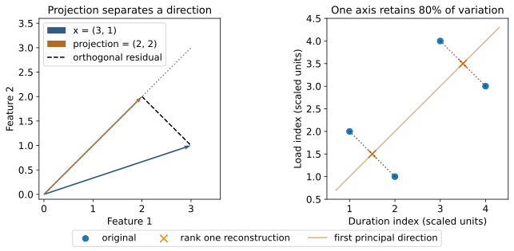
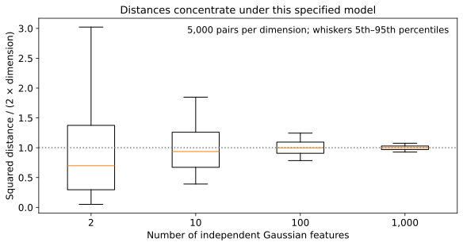

Browse chapters
14 Reason with vectors and matrices
Start with a collection of runs
Suppose you have hundreds of scheduler traces. You can already calculate waiting time, setup time, execution time, and final completion time. You now want to answer a different question: which runs fail in similar ways, and which measurements move together?
A vector is an ordered collection of numbers. One run might become a vector containing its mean task wait, total GPU setup time, and peak queue length. A matrix stacks those vectors into rows. This representation lets you compare runs, fit a simple prediction model, and compress a large table into a few informative directions.
The order matters. The vector [wait, setup, queue] is not interchangeable with [queue, wait, setup]. Store column names and units alongside the array. Keep run identifiers outside the numerical feature matrix so you can return to the underlying traces. A row is still a measurement of a particular run under particular conditions, even after its identifier disappears from a plot.
This chapter uses small invented arrays so every calculation can be checked by hand. It does not claim that the pinned scheduler traces have the clusters or principal directions shown here. The project is to learn a representation you could apply to those traces after defining comparable features.
Read matrix operations as data operations
Let X have n rows and p columns. Its shape is n by p: n observations of p features. A feature column is a vector of length n. A row is a vector of length p. The transpose, written X^T, exchanges rows and columns.
The dot product multiplies corresponding entries and adds the products. For x = [3, 1] and w = [2, 4], x dot w = 3 × 2 + 1 × 4 = 10. A weighted score is a dot product. This is useful only when the weights convert the features into a meaningful shared objective. Adding seconds to bytes with arbitrary weights can produce a number without producing a useful decision.
Matrix multiplication applies many dot products at once. If X is n by p and a weight vector w has p entries, X @ w produces n scores. The inner dimensions must agree. In NumPy, @ is matrix multiplication; * multiplies matching entries element by element. Confusing these operations can yield the right shape and the wrong analysis.
A matrix can also represent a transformation. A two by two rotation matrix changes coordinate axes without changing Euclidean lengths. A diagonal matrix can scale one axis much more than another. These transformations affect how a cloud of observations looks and how distances behave. Preprocessing is therefore part of the model, not a neutral cleanup step.
A projection explains one direction
Take x = [3, 1] and the direction u = [1, 1]. We want the point on the line through u that is closest to x. Every point on that line has the form a u, for some scalar a. The squared error is the sum of the squared entries of x − a u.
Expanding gives x dot x − 2a(x dot u) + a²(u dot u). Its derivative with respect to a is −2(x dot u) + 2a(u dot u). Setting the derivative to zero gives:
a = (x dot u) / (u dot u)
projection = a uHere a = 4 / 2 = 2, so the projection is [2, 2]. The residual is [1, −1]. Its dot product with u is zero, which means the residual is perpendicular to the direction. The original vector has been separated into an explained component along u and an unexplained component across it.
This geometry is the foundation of least squares. A model represents the directions it can explain. Fitting finds the closest point inside that space, under a chosen error measure. Perpendicular residuals are a geometric property of the fitted model; they do not imply that the model has captured the mechanism generating the data. MIT on projections and least squares

Figure 7. Left: the vector [3, 1] projected onto the line through [1, 1]. Right: four synthetic observations compressed onto their first principal direction. Dotted segments show information lost during reconstruction. Both panels use equal axis scaling so geometric angles and distances remain meaningful.
A tiny fitted model
Imagine three synthetic measurements of duration at workload levels 0, 1, and 2: the durations are 1, 2, and 2 seconds. Fit duration = intercept + slope × workload. The feature matrix contains a column of ones for the intercept and a column of workload values.
import numpy as np
A = np.array([[1., 0.], [1., 1.], [1., 2.]])
y = np.array([1., 2., 2.])
beta = np.linalg.lstsq(A, y, rcond=None)[0]
predicted = A @ beta
residual = y - predictedThe fitted intercept is 7/6 and the slope is 1/2. Predictions are 7/6, 5/3, and 13/6. Residuals are −1/6, 1/3, and −1/6. Their sum is zero, and their dot product with workload is zero. Those are the two perpendicularity conditions, one for each feature column.
The normal equations write this condition as A^T A beta = A^T y. They help explain the geometry. For computation, use a least-squares solver rather than explicitly calculating an inverse of A^T A. Nearly redundant columns can make fitted coefficients unstable; forming A^T A worsens conditioning. Predictions may remain similar while individual coefficients swing. Report that instability instead of assigning causal meaning to each coefficient.
This three-point fit is a calculation lesson, not a useful performance predictor. A real model needs held-out runs, residual checks, plausible feature definitions, and observations across the workload range where it will be used. Fitting an intercept and slope does not establish that changing workload alone causes the fitted change.
Distance depends on your units and purpose
Suppose each observation contains execution time in seconds and memory in MiB. Let A = [1, 100], B = [2, 100], and C = [1, 110]. Raw Euclidean distance calls B closer to A: the distances are 1 and 10. Convert time from seconds to milliseconds and they become 1,000 and 10. The nearest neighbor changes even though the physical observations did not.
Choose scales before interpreting distance. If a one-second change and a 20-MiB change are the meaningful reference differences, divide the two columns by 1 and 20. The resulting distances from A are 1 for B and 0.5 for C. The scales encode a substantive choice about similarity.
Standardization instead subtracts each training-set mean and divides by its standard deviation. This produces unitless features and can prevent a large numerical scale from dominating. It gives high weight to features with small variation, including possibly uninformative noise. Constant columns need explicit handling because their standard deviation is zero. Fit the transformation on the training data and reuse it on validation and future data.
Euclidean distance adds squared coordinate differences before taking a square root. Manhattan distance adds absolute differences, reducing the influence of one unusually large coordinate difference. Cosine similarity compares directions through the normalized dot product. It can treat two very different magnitudes as identical: [1, 2] and [10, 20] have the same direction. The zero vector has no defined direction. Pick the measure for the question, and record the treatment of zeros and missing features.
Mahalanobis distance also accounts for covariance: a change along a direction with large usual variation counts less than a similarly sized change along a stable direction. Its squared form is d^T S^−1 d, where d is the difference and S is a covariance estimate. Estimating S reliably becomes difficult when features approach or exceed independent observations. Redundant features can make it singular. Regularization or dimensionality reduction introduces assumptions that belong in the analysis record; an inverse operation cannot create the missing information.
Covariance records how deviations align
Use four synthetic observations of two comparable, already scaled indices:
| Observation | Duration index | Load index |
|---|---|---|
| A | 1 | 2 |
| B | 2 | 1 |
| C | 3 | 4 |
| D | 4 | 3 |
Both column means are 2.5. Subtract the means to obtain a centered matrix C. A sample covariance multiplies paired deviations and divides their sum by n − 1. The covariance matrix for this example is:
S = C^T C / (n - 1)
S = [[5/3, 1 ],
[1, 5/3]]The diagonal entries are the sample variances. The off-diagonal value 1 says that deviations tend to have the same sign. Correlation divides covariance by the product of the two standard deviations. Here the correlation is 1 / (5/3) = 0.6. It is unitless, whereas covariance carries the product of the feature units.
Covariance describes joint variation; a shared workload driver could produce it without either measured feature causing the other. If runs come from different workload families, inspect within-family relationships before interpreting the pooled covariance. In NumPy, observations in rows require rowvar=False when calling np.cov. That orientation option matters. NIST on covariance matrices, NumPy covariance
PCA finds directions with large variation
Principal component analysis asks which unit-length direction captures the most variation of the centered observations. Projecting C onto a unit vector v gives scores C v. Their sample variance is v^T S v. The maximizing direction is an eigenvector of S: applying S to that direction changes its length but not its direction.
For our matrix, the first direction is [1, 1] / square root of 2. Its variance is 8/3. The perpendicular direction [1, −1] / square root of 2 has variance 2/3. The total variance is 10/3, so the first direction retains 80 percent and the second retains 20 percent.
Keep only the first component and reconstruct each point. A and B both become [1.5, 1.5]; C and D both become [3.5, 3.5]. The total squared reconstruction error is 2. This calculation makes the tradeoff concrete: a compact representation merges observations that differed in the discarded direction.
A singular value decomposition computes this efficiently. For a centered real matrix C, write C = U diag(s) V^T. The columns of V supply feature directions; U multiplied by s supplies observation scores. Squaring each singular value and dividing by n − 1 gives the corresponding sample variance. NumPy returns V^T as its third result, named Vt or Vh. MIT on SVD, NumPy SVD
X = np.array([[1., 2.], [2., 1.], [3., 4.], [4., 3.]])
mean = X.mean(axis=0)
C = X - mean
U, singular, Vt = np.linalg.svd(C, full_matrices=False)
scores = C @ Vt.T
variance = singular**2 / (len(X) - 1)
reconstructed = scores[:, :1] @ Vt[:1] + meanThe sign of a principal direction is arbitrary. An implementation may return the negative direction and negative scores with exactly the same reconstruction. Equal or nearly equal principal variances can also allow unstable directions within a stable subspace. Compare reconstructions or subspaces before treating a flipped plot as a changed phenomenon.
PCA preserves variance under the preprocessing and squared-error metric you chose. It does not preserve every rare failure or every feature useful for prediction. A rare safety violation may occupy a low-variance direction. Choose the number of components using reconstruction diagnostics and the downstream task, then validate on held-out data. A two-dimensional scatter plot is a view of the data, not the full dataset.
Clusters are hypotheses about similarity
K-means chooses K centers and assigns points to reduce the sum of squared distances to their assigned centers. For the four points above, two natural centers are [1.5, 1.5] and [3.5, 3.5], with total within-cluster squared distance 2. The result summarizes the geometry you supplied.
You can see one assignment-and-update step without a clustering library. Start the centers at A and C. Assign each observation to the nearer center, then replace each center by the mean of its assigned observations. In this fixture, A and B share one center and C and D share the other. The updated centers are [1.5, 1.5] and [3.5, 3.5], and another assignment step leaves the groups unchanged.
centers = X[[0, 2]].copy()
squared = ((X[:, None, :] - centers[None, :, :])**2).sum(2)
labels = squared.argmin(axis=1)
centers = np.array([X[labels == k].mean(0) for k in range(2)])
within_error = ((X - centers[labels])**2).sum()
assert np.isclose(within_error, 2.0)This code exposes the core operation for a case where both groups are nonempty. A general implementation must handle empty groups, convergence, initialization, and scale. Hierarchical clustering builds a sequence of merges under a chosen rule for distance between groups. Density-based methods identify dense connected regions and can leave some observations unassigned. Neither approach removes the need to justify features and neighborhood definitions.
The optimization can depend on initialization. Its preference for compact groups around means can fit some datasets poorly, especially elongated groups, unequal densities, or isolated outliers. Other clustering methods make other assumptions. Changing the distance, feature scale, feature selection, or number of clusters may change the answer. scikit-learn clustering guide
For an engineering investigation, inspect representative traces and unusual members of each group. A cluster containing high setup time may suggest repeated model loading; it does not establish that loading caused the final delay. Compare the group's composition by workload, resource, and policy. Check whether groups recur in fresh runs and whether recognizing them changes a practical decision.
Do not evaluate a cluster solely by how separated it looks on a PCA plot. Projection can hide overlap or create an impression of separation. Check stability in the full chosen feature space and explain why the groups matter operationally.
More dimensions can make closeness less useful
Consider an explicit model: two independent points each have d independent standard normal coordinates. Their coordinate differences are independent normal variables with variance 2. Each squared difference has mean 2 and variance 8. Adding over d coordinates gives expected squared distance 2d and variance 8d. The standard deviation divided by the mean is therefore square root of (2/d).
Under this model, relative variation in squared distances decreases as dimensions increase. Our simulation of 5,000 pairs gives coefficients of variation about 1.00, 0.45, 0.14, and 0.044 for 2, 10, 100, and 1,000 dimensions. Distances grow while their relative differences shrink.

Figure 8. Squared distances divided by their theoretical mean for independent Gaussian features. Boxes show the middle half of simulated pairs and whiskers the fifth through ninety-fifth percentiles. The model and normalization are essential: this is not a universal claim about every embedding or high-dimensional dataset.
Adding irrelevant features can bury meaningful differences. More features also require more observations to estimate flexible relationships. Start with features connected to plausible mechanisms, compare against a simpler representation, and test whether the additional dimensions improve retrieval, prediction, or diagnosis on fresh cases.
Practice and a stopping rule
Run python companion/math_examples.py and python companion/check_math_examples.py from the expanded book root. The first writes the arrays, six figures, and numerical results; the second checks identities and known answers. Then alter one feature's units in the distance example and verify that explicit physical scaling restores the original comparison.
Exercise: explain why retaining 80 percent of variance does not guarantee retaining 80 percent of useful diagnostic information. A useful answer names a decision and a low-variance feature that could control it. For example, one infrequent permission violation may matter more than ordinary variations in execution time.
For your own traces, stop when the representation supports a clear next action: identifying a reproducible failure family, finding comparable runs, or producing a simpler predictive baseline. A more elaborate embedding is worthwhile when it improves that action under a fair evaluation.
Projection and information loss
Rotate a direction or keep fewer principal components. Which information survives?
Synthetic chapter 14 examples. Projection uses x = (3, 1). PCA uses the four centered observations from the book; its axes are fixed for this dataset, with 80% and 20% of the variance. This is not a general PCA solver.